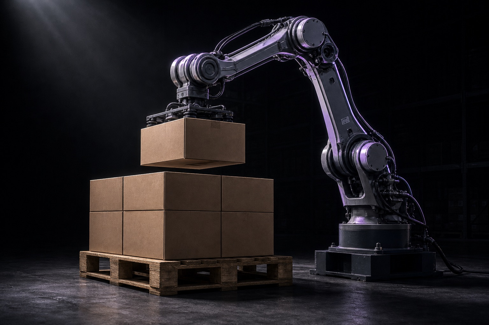
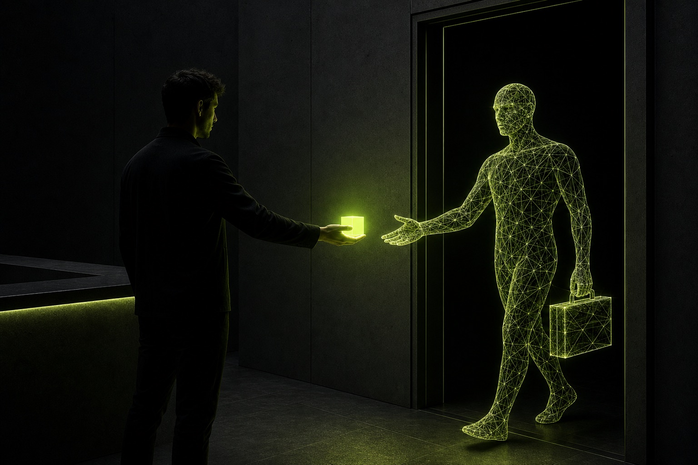

Prihodnost digitalnega dela, orodje, s katerim jo živimo, in metoda, po kateri gradimo. Vse, kar se danes naučita, je hkrati tudi to, kar prodajamo.
za Andraža in Leona ← → za navigacijo slajdi so interaktivni, klikaj
Vse človeško delo je premikanje snovi ali premikanje informacij. To je celotna delitev.

Zaznaj informacijo, premisli, ukrepaj. Mail, ponudba, analiza, objava: vedno ta krog.
Isto zanko ves dan vrti vsak, ki dela za ekranom; razlikuje se samo, kaj bere in kaj ustvari. Preklopi med poklici in poglej.
Računalnik upravljamo na dva načina: z miško in tipkovnico po ekranu, ali prek terminala, kjer vpišeš ukaz in se stvar izvede. Claude Code, Codex in Cursor imajo dostop do terminala in te ukaze poznajo.
način 1 · miška in tipkovnica
Ekran je frontend računalnika: klikaš, vlečeš, tipkaš. Tako delamo ljudje.
način 2 · terminal (ukazi)
$ ls Dokumenti
ponudba.pdf stranke.xlsx logo.png
$ open ponudba.pdf
$ python analiza.py --mesec julij
✓ poročilo shranjeno: julij-porocilo.html
Isti računalnik, brez klikanja: vpišeš ukaz, stvar se zgodi. Tako dela AI, zato je lahko tako hiter.
To velja za vse, kar je na računalniku: datoteke, programi, skripte. Splet je druga zgodba: stran lahko odpre, za klikanje po njej pa rabi posebna vrata (slajd 07). Do zunanjih orodij pa AI pride po treh poteh:
Ukazna vrstica orodja: agent tipka ukaze, kot bi jih ti v terminal.
Standardni vtič, narejen prav za AI: orodje se agentu samo predstavi in ga zna takoj uporabljati.
Strojni vmesnik storitve: agent pošilja zahteve neposredno, brez ekrana vmes.
To ni »nekoč«, ampak zdaj: na tvojem računalniku, na tvojih datotekah. Pritisni start.
Nov sodelavec prvi dan dobi štiri stvari. AI rabi popolnoma iste štiri, samo mize in plače ne. Klikni vsako režo.

računi in orodja, do katerih sme (MCP, API, CLI)
kako pri nas delamo: pravila, postopki, standardi
znanje o firmi: ponudba, stranke, cene, ton
prve mesece nič ne gre ven brez tvojega pogleda
Večina podjetij nima zapisane niti ene od teh štirih stvari. Točno tam je najin posel.
Modele imajo vsi iste. Preklopi stikalo in glej edino spremenljivko, ki šteje. Isti poklici kot prej: preklapljaj.
Napiši follow-up mail kliniki, ki je včeraj spraševala po ceni.
AI mora do orodij, ki jih že uporabljaš. Tri poti, tri hitrosti. Opazuj pretok podatkov.
Uradni priklop, zgrajen za ta namen. Novo merilo pri izbiri KATEREGAKOLI softvera: ima vtičnico za agente?
AI klika po spletni strani kot človek. Deluje skoraj povsod, a počasneje, poleg tega se stran lahko spremeni ali brani (zaznavanje botov).
AI gleda ekran in premika miško. Načeloma odpre vse, danes pa je počasno in okorno. Je rezerva, ne prvi izbor.
AI ne pride z dostopom do tvojega denarja ali strank. Dobi samo tisto, kar mu izrecno priklopiš. Klikni dostope in glej, kaj se odklene.
Banke ni na seznamu. Ta vrata ne obstajajo, razen če bi jih kdo namerno zgradil. Nihče pameten jih ne.
Vse, s čimer AI trenutno dela, leži na eni mizi (context window). Natrpana miza pomeni slabše delo, čisto kot pri ljudeh. Rešitev ni večja miza, ampak stranska miza.
To je celoten sistem prilagajanja. Vse ostalo so podrobnosti.
Delovni spomin seje. Prejšnji slajd. Vse spodaj obstaja zato, da miza ostane čista.
Prebere ga na začetku vsake seje, samodejno. Kar dvakrat razlagaš, zapiši enkrat sem in nikoli več.
Kontrolni list za določeno opravilo, dela ga s tabo. Primer: skill za račune, ki pozna naše številčenje in predlogo. Kličeš z /ime.
Sodelavec s svojo mizo. Umazanija ostane pri njem, k tebi pride ena čista kartica povzetka.
Hišna pravila, ki jih vsiljuje stavba, ne vljudnost delavca. Fizično blokirajo nevarno dejanje, tudi ob treh zjutraj.
Priročnik, playbooki in pravila v eni škatli, ki se namesti z enim klikom. Tako se cel setup preseli k novi osebi ali stranki.
Standardni vtič, ki poveže orodja z AI-jem. Naslednji slajd: kaj vtakneva midva.
Vsaka kartica: orodje, pot in kaj AI z njim zmore. Točni ukazi so v guidu, ki ga dobita zraven.
Ekipni pregled kdo-dela-kaj, brez sestankov.
Stranski vhod do vsega brez vtičnice + preverjanje lastnega dela.
Delo se ne konča kot datoteka, ampak kot živa stvar na netu.
Namesto ugibanja iz zastarelega spomina.
Osnutki vedno, pošiljanje nikoli brez tebe.
Kamor AI javi, kaj je shipnil.
Evidenca ostane poštena po vsakem klicu.
Vse slike v tej prezentaciji so narejene z njim.
Vsaka aplikacija, ki jo bosta kdaj zgradila, ima iste tri sloje. Klikni »pošlji zahtevo« in spremljaj pot enega klika.
klikne »Rezerviraj termin«
kar uporabnik vidi: strani, gumbi, obrazci (HTML, CSS, JS)
logika v ozadju: preveri, izračuna, odloči, kaj se sme
spomin aplikacije: podatki obstanejo tudi, ko zapreš stran
Pritisni gumb in poglej, kaj se v resnici zgodi ob enem kliku.
zaslon · to vidi uporabnik
koda · frontend ta klik spremeni v zahtevo
// gumb na strani <button onclick="rezerviraj()"> Rezerviraj termin </button> async function rezerviraj() { await fetch('/api/rezervacije', { method: 'POST', body: { termin: 'čet 10.00', storitev: 'pregled psa' } }) }
koda · backend odloča, kaj se sme
// logika, ki je uporabnik nikoli ne vidi if (!uporabnik.prijavljen) return zavrni() if (!terminProst('čet 10.00')) return zavrni() shrani(rezervacija) // → baza podatkov posljiPotrditev(uporabnik) // → servis za maile
baza · podatek se trajno zapiše
INSERT INTO rezervacije (stranka, termin, storitev) VALUES ('Novak', 'čet 10.00', 'pregled psa');
| id | stranka | termin | storitev |
|---|---|---|---|
| 41 | Kovač | pet 9.00 | cepljenje |
| 42 | Novak | čet 10.00 | pregled psa |
servis · aplikacija ne pošilja sama, servis pošlje zanjo
resend.send({ to: 'novak@gmail.com', subject: 'Rezervacija potrjena' })
zaslon · uporabnik vidi samo rezultat
četrtek ob 10.00 · potrditev je v vašem mailu
Za maile, prijavo uporabnikov ali plačila ne pišeš svoje rešitve, priklopiš servis. Klikni kartico in poglej odprtokodno alternativo, ki jo lahko poganjaš na svojem strežniku.
Da aplikacija sama pošlje potrditev ali obvestilo: servis tipa Resend ali AWS SES, priklopljen z enim API ključem.
Open source: lasten SMTP je mazohizem; tu se servis navadno splača. Naša izbira: Resend.
Registracija, prijava, gesla, seje. Nikoli ne izumljaš sam, vzameš preverjeno rešitev.
Open source: Better Auth (uporabljamo v CoachMeAI stacku) ali Keycloak, oba na svojem strežniku.
Kartice, naročnine, računi: Stripe. Aplikacija dobi signal »plačano je«, ostalo uredi servis.
Open source: pri denarju alternativa ni smiselna; regulativa in zaupanje sta Stripov posel.
Slike, PDF-ji, uploadi: object storage (S3 in podobno), ne mapa na strežniku.
Open source: MinIO na lastnem VPS govori isti S3 jezik.
Kdo pride, od kod, kaj klikne. Brez tega letiš na slepo.
Open source: Umami ali Plausible na svojem strežniku, brez piškotkov in brez Googla.
Namesto plačljivega CRM-ja poganjamo odprtokodnega na svojem strežniku: naši podatki, nič mesečnine, in Claude ga upravlja prek vtičnice.
Poenostavljena resnica: frontend + backend + baza + servisi. Claude Code zna napisati in povezati vse štiri. Vajino delo je vedeti, KAJ hočeta, in preveriti, da dela.
Naloga: landing page za NativeAI po zgledu terafab.ai. Prompt dobita gotov (vaja 6 v guidu); tukaj je, kaj se bo zgodilo po korakih. Limetini koraki so tisti, kjer si TI orodje.
Zeleni del črte je, koliko dela opravi človek. Cilj ni stopnica 4 povsod, cilj je vedeti, na kateri stopnici je kateri workflow.
Copy-paste v ChatGPT. AI kot slovar na steroidih.
AI bere tvoje sisteme: pošto, datoteke, koledar. Odgovori so o TVOJEM svetu.
AI opravi nalogo, ti pregledaš in potrdiš. Tu se zgodi največji preskok produktivnosti.
AI vodi cel proces, tebe pokliče samo ob izjemah. Ti postaviš pravila in meje.
In od prvega dne velja: kar dvakrat razložiš, enkrat zapišeš. Najbolje dokumentirana firma zmaga, tudi najina.